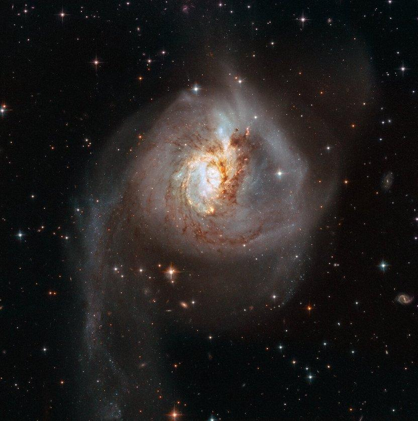
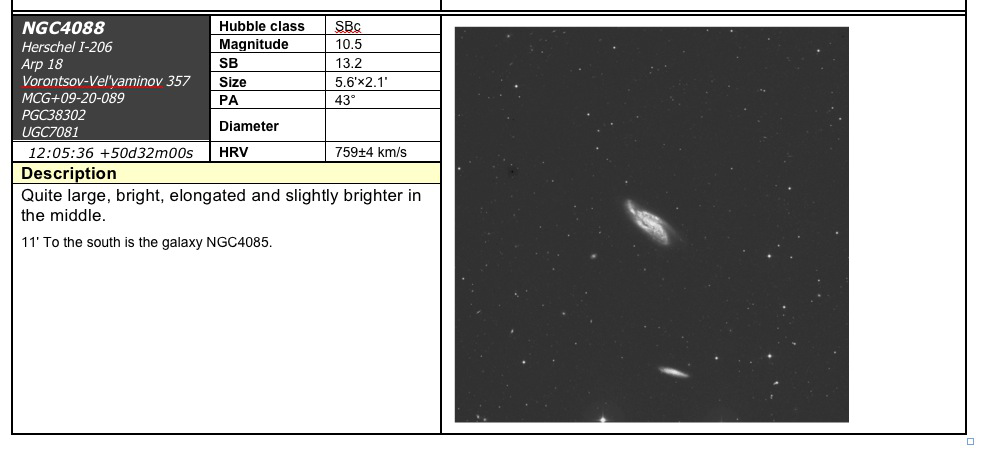

NGC 3256, the nearest LIRG
- Name: NGC 3256 = VV 65 = MCG -07-22-010 = ESO 263-038 = AM 1025-433 = PGC 30785
- RA: 10h 27m 51.1s
- Dec: -43° 54' 19" (J2000)
- Constellation: Vela
- Type: Sb pec; merger; starburst; LIRG
- Size: 3.8' x 2.1'
- Magnitude: V = 11.5, B = 12.2
Luminous Infrared Galaxies (LIRGs) have infrared luminosities greater than 100 billion times the Sun's luminosity (1 trillion in the case of Ultraluminous Infrared Galaxies or ULIRGs) and often host the most extreme stellar nurseries in the local universe. This intense activity is triggered by the collision and merging of two gas-rich spiral galaxies. During the smash-up, galactic bars funnel a massive inflow of molecular gas and dust to the nuclear region. This gas can ignite a nuclear starburst, or trigger an active galactic nucleus (AGN) by feeding a supermassive black hole. The surrounding dust absorbs most of the optical and UV radiation produced by newborn massive stars or emitted by the black hole's accretion disk. This energy is re-emitted as heat, creating the prodigious infrared luminosity. At its peak, the star formation of a LIRG can exceed the Milky Way's rate by 100x.
NGC 3256 is a fairly advanced merger; dynamical simulations suggest two gas-rich spirals began interacting ~ 450 million years ago and there is evidence a third galaxy was involved in the merger. It displays two long tidal tails with different stellar properties. The bluer western tail has a younger population (roughly 288 Myr) formed after the interaction, while the eastern tail is primarily an older stellar population (~840 Myr) from the host galaxy. To coin a Jimi Lowrey-ism, the galaxy's optical appearance is more screwed up than a soup sandwich!
A great image of the western and eastern tidal tails by Mark Hanson is here, while the central portion of the galaxy is highlighted in the HST image below. The eastern tail is attached at the north end of the galaxy and trails directly towards the east, while the fainter western arm extends to the northwest (Hanson's image is both rotated and flipped, so the orientation won't match).

The dusty body contains a dense population of young clusters. In fact, NGC 3256 is the most cluster-rich LIRG in the Great Observatory All Sky LIRG Survey (GOALS). A recent 2024 paper using JWST found 3061 Young Massive Cluster candidates (age less than 5 Myr and masses greater than 100,000 times the Sun's mass). The red and orange regions along the spiral arms in this recent JWST image contain young stars created in the merger, whose intense energy has heated small dust grains that are re-radiating in the infrared. You can directly compare the HST with the more orderly JWST image and drag a handle to compare different parts of the galaxy.

A nuclear starburst in NGC 3256 powers a strong molecular outflow. There is an enhancement of young, massive clusters towards the inner part of the galaxy, although the starburst and outflow is buried within the dust. And at the center is a double nucleus, separated by only 5" (~850 parsecs). Both nuclei are clearly visible in radio and mid-infrared images, but the southern nucleus is hidden by the dust at optical wavelengths. A 2015 study by Ohyama and colleagues also found evidence for an AGN in the southern nucleus, indicating an actively feeding supermassive black hole. In the next stage the dual nuclei will merge and coalesce into a single nucleus and the flurry of star formation will eventually cease.
NGC 3256 is part of a group that was first catalogued in 1969 as Klemola 12 with 10 galaxies in a 25' x 50' region. The group is part of the much larger Hydra-Centaurus Supercluster. NGC 3256C = ESO 263-041, another disrupted galaxy, is situated 14' ENE and NGC 3263, with its own long tidal tail, is 20' southeast. Unfortunately, this remarkable group of galaxies is pretty far south in Vela for viewing from much of the U.S. and I've only seen the group from Costa Rica and Australia.
I last observed NGC 3256 from Coonabarabran (near Siding Spring Observatory in Australia) 6 years ago with a 25" f/5. I described it as "bright, very large, oval 4:3 NW-SE, ~1.6'x1.2', pretty sharply concentrated with a very bright relatively large core that appears off-center. The halo is irregular in brightness." I was disappointed neither tidal plume was seen as images suggest the eastern plume should be visible in a large scope. But the conditions were quite dewy that night as the secondary had dewed over.
As always,
"Give it a go and let us know!
Good luck and great viewing!"